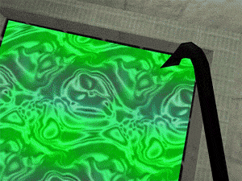

Water textures in half-life have procedural animation to make them distort and fluctuate. They have several special things to consider; They use specific colors from the color index pallete to control both fog color and fog intensity. The texture must be tiling textures or else the effect will look bad with visible seams. Lastly they are designated with "!" in their filename. For this tutorial HL-Tools or Wally.exe are used to define the water fog parameters.
Standard water textures are 128x128, but you can have higher but there is a quirk where you will need to scale on brush differently; ill get to that later. Prepare your image as the same you would in part 1 and save it out:
For Wadmaker.exe you must create a text file saved as wadmaker.config in the folder of your texture. Edit the text file with notepad/notepad++ and add as follows:
!gslime water-fog: R G B INT
The first thing to the left is the name of the image. The R is red in 0~255, same with G for green and B for blue. INT you also put a 0~255 which is the intensity of the fog. So for example, if I wanted a bright pink full intensity fog it would be:
!gslime water-fog: 255 0 255 255
Drag and drop the folder as you did in part1, and jump to map usage.
1)Open wally and create your wad file or open an existing one. Import your image and rename the front to "!" like so, then, double click the image to preview it. When the preview image appears, go to image>edit pallette:
2) In "edit palette" mode select index 3 (4th color box from the left) Set it to the color of your fog. For the purposes of this tutorial I will be going with an obvious purple shade of RGB 200 0 255. Then select the next color (index number 4) and set it to maximum red which is RGB 255 0 0. The red color is the control for the fog intensity so a RGB value of 0 0 0 has minimal fog, while and RGB value of 255 0 0 will produce a thick fog.
3)Now click okay and you might see some weird distortions in your image. Don't panic, we are just saving out the modified palette. Go to save palette. Then close the image and when it prompts you DO NOT SAVE.
4)Double click the image again and bring it up in preview. Now go to colors load pallete and load in the pallete file you just saved. Now the new pallete is loaded and the image is modified to fit it. Now when you close the preview you click save. Now save the WAD file.
1) Apply the new water texture to a func_water. For textures higher than 128x128,there is a scale quirk where it wont match what you see in hammer. To deal with this,texture your water brush with a standard halflife 128x128 texture to your brush, then set your scale, then swap the texture with your custom one and dont touch the scale numbers. It will look too big and clipped in hammer but will look fine ingame.
2) Compile the map and observe:

3) For different RED control values for the fog I made this quick reference chart: